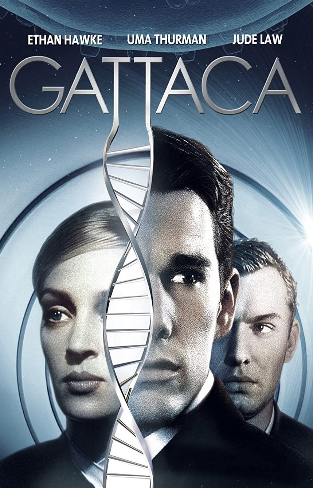
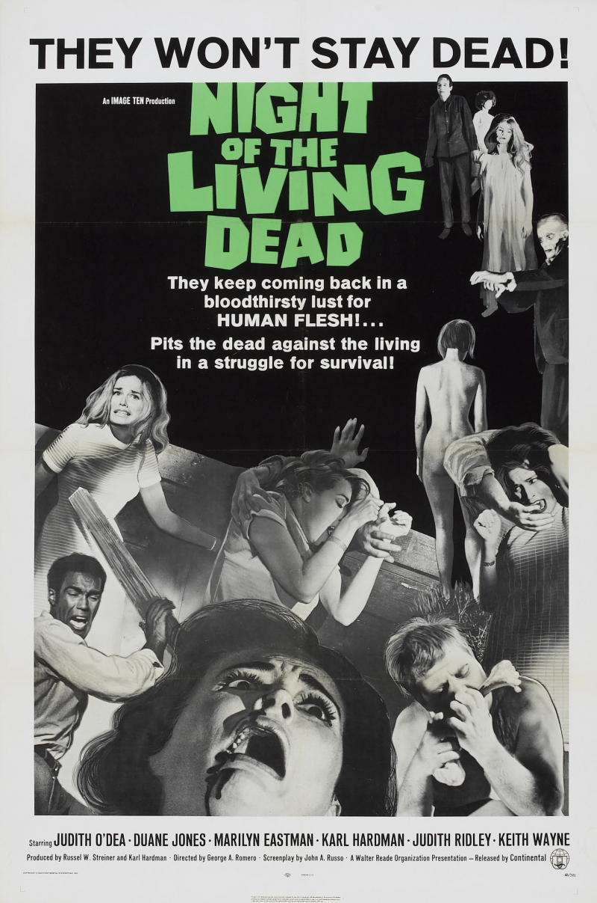

Гаттака
[12+]
20:00–22:00
1997
Фантастика, драма
США
Эндрю Никкол
Субтитры
Добро пожаловать в Гаттаку - совершенный мир будущего. Здесь каждый генетически запрограммирован, и печальная судьба ожидает тех, кто был рожден в любви, а не в лаборатории. Такова судьба Винсента Фримана, молодого человека, получившего при рождении ярлык «не пригоден».
Винсент обладает весомыми недостатками: он подвержен страстям, он поддается эмоциям, и он верит в то, что его мечты сбудутся. Вот почему он покупает личность другого человека, пытаясь обмануть власти и стать уважаемым членом Корпорации Будущего Гаттака.
И когда он уже на пути к свободе, убийство грозит раскрытием его реальной личности. Несмотря на свою невиновность, Винсенту есть что скрывать и есть что терять. Но так трудно остаться в живых, когда в тебе живут два человека…
MTE2NDUyMzoxMTY0NTI2OjA6MDoxMjEwNzY3OjA6MDowOjQ6MDpydTowOjA6MDplZDk0NWQ2Yjk5NmZmNDU2NTdjOWRjNzc3MjE0M2E5MzJjMzIyYjY2

Ночь живых мертвецов
[16+]
23:00–1:00
1968
Ужасы
США
Джордж А. Ромеро
Субтитры
Барбара и её брат Джонни приезжают на кладбище, расположенное в уединённом загородном месте. Неожиданно на них совершают нападение существа, напоминающие мертвецов, восставших из могил. Барбара укрывается в расположенном неподалёку доме, где также находят убежище темнокожий парень по имени Бен, супруги Гарри и Хелен Куперы с дочерью Карен, а также влюблённые Том и Джуди.
MTE2NDUyMzoxMTY0NTI2OjA6MDoxMjEwODAwOjA6MDowOjQ6MDpydTowOjA6MDplZDk0NWQ2Yjk5NmZmNDU2NTdjOWRjNzc3MjE0M2E5MzJjMzIyYjY2